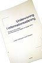

|  |
| BOOK AND SOFTWARE REVIEWS | ||||
Limberg, Louise and Folkesson, Lena. Undervisning i informationssÖkning: slutrapport från projektet InformationssÖkning, didaktik och lärande (IDOL). [Teaching information seeking. Final report on the project Information seeking, didactics and learning (IDOL)] Borås: Valfrid, 2006. 142 p. (Skrifter från Valfrid Nr. 31. ISSN 1103-6990). ISBN 91-89416-13-9. 200 SEK
In the foreword to the book the purpose is given as follows:
The research project, Information seeking, didactics and learning (IDOL) has studied experiences of teaching information seeking and builds on our earlier research on information seeking and learning, where the departure point has been the pupils' perspective. The IDOL study has added a teaching perspective to the picture of information seeking and learning.
The book consists of six chapters: in the first chapter the problem is described and the purpose of the project is formulated. Chapter two is devoted to a rather thorough research overview that accounts for the research front in the area of 'teaching information seeking' and creates thereby some of the departure points for the design of the project and the direction it takes. In the third chapter the project's theoretical departure points are briefly and concisely presented indicating roots in phenomenography, educational science and in theories of information seeking and information literacy. The design and implementation of the empirical investigation are the subjects of chapter four and the empirical results are presented in chapter five. Chapter six completes the report with a discussion of the results and conclusions are drawn on the basis of both theory and practice.
The authors have attempted to identify and describe teachers' and librarians' different experiences of teaching information seeking. The project has been carried out as an interaction between the researchers and the teachers and librarians active within the field at three schools in western Sweden during the course of five school terms; from Spring 2001 to Spring 2003. One of the objects of the project was to develop methods in teaching information seeking. The study has been mainly carried out through interviews, where it is my belief that the number of interviews might have been greateer or, alternatively, might have been carried out more often.
Chapter five, in which the results are presented, dominates the report and is very interesting. To be able to see in such a concrete manner the differences between teachers' and librarians' viewpoints with regard to the knowledge content, goals and contents of teaching in information seeking, in methods for teaching, the quality of pupils' information seeking together with their views of group work was nearly an awakening. Teachers and librarians should no longer focus their teaching on different sources and search paths and taking these in a recommended order but on helping pupils to use their own questions and angles of approach as starting points; to proceed from their own situations, in other words. The quality of information seeking depends to a high degree on the evaluation and use of information; not on seeking or retrieval. Information literacy should not be seen as a general ability but as a range of abilities that vary with the situation, the contents of the assignment and the context. However, teaching today tends to emphasise the general rather than the specific and the situation-bound. A more developed view of information literacy should concern what is common to it in different contexts and what is specific to one or the other situation.
The report clearly reveals the line of development from teaching library skills to support in the development of information literacy but also how teachers and librarians, understand learning situations, learning objectives and cooperation in different ways. The authors show that teaching goals have shifted from a focus on teaching the use of specific tools, such as bibliographies, encyclopaedias, databases and search engines to a focus on pupils' thought processes connected to their ability to think critically. It has become increasingly important that pupils learn to account for their investigative processes and to reflect both over what they have learnt and how they have learned.
Some critical points however: the first chapter seems to have been badly proof-read. A number of unnecessary repetitions are in evidence as well as several spelling mistakes. This does not, however, unduly disturb the general impression that this is an extremely useful book in different teaching situations. Partly for students of library and information science but even for librarians and teachers interested in cooperating with each other in developing pupils' information literacy.
Brigitte Kühne
Växjö University
September, 2006
How to cite this review
Kühne, B. (2006). Review of: Limberg, Louise and Folkesson, Lena. Undervisning i informationssÖkning: Slutrapport från projektet InformationssÖkning, didaktik och lärande (IDOL) . Borås: Valfrid, 2006. Information Research, 12(1), review no. R242 [Available at: http://informationr.net/ir/reviews/revs242.html]